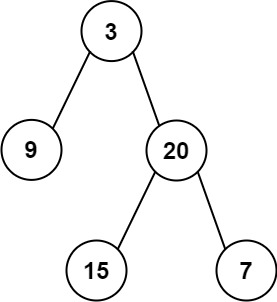

题面
给定两个整数数组 preorder 和 inorder ，其中 preorder 是二叉树的先序遍历 ， inorder 是同一棵树的中序遍历 ，请构造二叉树并返回其根节点。
示例 1:

输入: preorder = [3,9,20,15,7], inorder = [9,3,15,20,7]
输出: [3,9,20,null,null,15,7]示例 2:
输入: preorder = [-1], inorder = [-1]
输出: [-1]提示:
1 <= preorder.length <= 3000inorder.length == preorder.length-3000 <= preorder[i], inorder[i] <= 3000preorder和inorder均 无重复 元素inorder均出现在preorderpreorder保证 为二叉树的前序遍历序列inorder保证 为二叉树的中序遍历序列
思路
- 和第 42 题（有序数组转 BST）是同一个递归建树框架：确定根 → 切出左右范围 → 递归 → 组装返回
- 两个关键性质：
- 先序遍历（根→左→右）：第一个元素一定是根节点
- 中序遍历（左→根→右）：根节点把数组分成 左子树 | 根 | 右子树
- 做法：
- 先序第一个元素 → 根
- 在中序中找到根的位置 → 知道左子树有几个节点（
l_size） - 用
l_size去切分先序数组的剩余部分：前l_size个给左子树，剩下给右子树 - 递归建左右子树，接到根上
- 用哈希表预存中序的
{值: 索引}，O(1) 找根的位置
用例子走一遍
preorder = [3, 9, 20, 15, 7], inorder = [9, 3, 15, 20, 7]
第一次：dfs(0, 4, 0, 4)
root_val = preorder[0] = 3
root_i = 1（3 在中序的位置）
l_size = 1 - 0 = 1
先序：[3 | 9 | 20, 15, 7]
根 左 右
中序：[9 | 3 | 15, 20, 7]
左 根 右
左子树：dfs(1, 1, 0, 0)
右子树：dfs(2, 4, 2, 4)
第二次（左）：dfs(1, 1, 0, 0)
root_val = preorder[1] = 9
l_size = 0（中序中 9 左边没有节点）
→ 叶子节点，返回 TreeNode(9)
第二次（右）：dfs(2, 4, 2, 4)
root_val = preorder[2] = 20
root_i = 3（20 在中序的位置）
l_size = 3 - 2 = 1
先序：[20 | 15 | 7]
中序：[15 | 20 | 7]
左子树：dfs(3, 3, 2, 2) → TreeNode(15)
右子树：dfs(4, 4, 4, 4) → TreeNode(7)边界公式
先序范围 | 中序范围 | |
|---|---|---|
左子树 |
|
|
右子树 |
|
|
其中 l_size = root_i - i_l（中序中根左边有几个节点）
- ⚠️ 这个边界公式不要硬背，对着例子算最不容易出错。比如第一次调用时
p_l=0, root_i=1, l_size=1，代入验证：左子树先序[0+1, 0+1]=[1,1]就是[9]，右子树先序[0+1+1, 4]=[2,4]就是[20,15,7]，对上了
和第 42 题 有序数组转 BST 的对比
42 题 | 本题（105） | |
|---|---|---|
怎么确定根 | 取中间元素 | 取先序第一个 |
怎么确定左右范围 | 中间左边 / 右边 | 用 |
递归返回 |
|
|
递归框架 | 完全一样 | 完全一样 |
代码实现
class Solution:
def buildTree(self, preorder: List[int], inorder: List[int]) -> Optional[TreeNode]:
hash_dict = {v: i for i, v in enumerate(inorder)}
def dfs(p_l, p_r, i_l, i_r):
if p_l > p_r:
# 相等是叶子节点
return
root_val = preorder[p_l]
root_i = hash_dict[root_val]
l_size = root_i - i_l
root = TreeNode(root_val)
root.left = dfs(p_l + 1, p_l + l_size, root_i - l_size, root_i - 1)
root.right = dfs(p_l + l_size + 1, p_r, root_i + 1, i_r)
return root
p_l, i_l = 0, 0
p_r, i_r = len(preorder) - 1, len(inorder) - 1
root = dfs(p_l, p_r, i_l, i_r)
return root- 易错点：
- `root.left = dfs(...)` 不是 `left_root = dfs(...)`：算了左右子树必须接到 root 上，否则 root 是孤立节点，输出只有根。和 42 题一样，递归建树必须
root.left = 递归结果 - `if p_l > p_r` 不是 `>=`：
p_l == p_r时还有一个节点（叶子节点），用>=会把叶子跳过 - `l_size = root_i - i_l`：是根在中序的位置减去当前子树的中序左边界，不是减去 0。递归深层时
i_l不是 0 - 左子树中序范围的左边界就是 `i_l`：直接用传进来的参数就好，不用绕着算
root_i - l_size（虽然结果一样，但容易出错） - 别忘了 `return root`：这是 return 传值模式，每层必须把建好的节点返回给上层
- 复杂度：时间 O(n)，空间 O(n)（哈希表 + 递归调用栈）